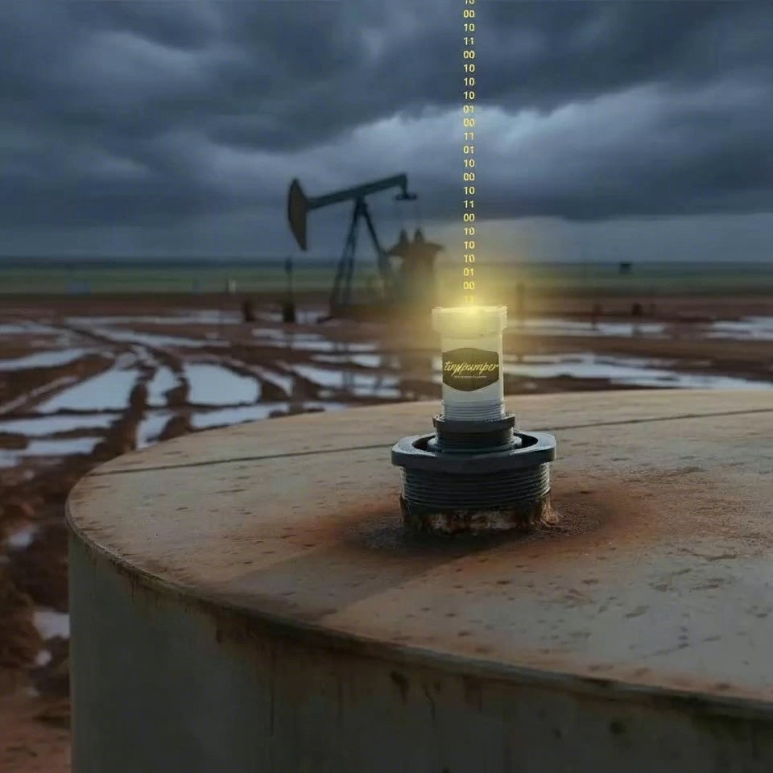

Say you pick up a package of wells. Good acquisition, solid production, and a bonus: they come with a SCADA system already installed. Remote monitoring, day one. On paper, you just got ahead.
Then you drive out to meet your new equipment.
The system hasn’t been updated in years. Nobody left at the company knows the passwords. The solar panels are glitchy, the radios drop out past the caliche pit, and the PLCs are running custom code some contractor wrote in 2007 and took to his grave, professionally speaking. To get any of it talking again, you need a specialist to drive out, bill by the hour, and deliver a diagnosis that sounds a lot like a ransom note.
Congratulations. You didn’t inherit an asset. You inherited an albatross.
How the albatross got here
Here’s the part nobody says out loud: that system was never designed for an operation like yours.
SCADA came out of a world of control rooms and staff engineers. It was sized for thousand-barrel-a-day wells, refineries, and gas plants, places where closed-loop control earns its keep and there’s a technician on payroll to feed the thing. Real technology, doing a real job, for the operations it was built for.
Then the vendors discovered a bigger market: everybody else. The feature sheet stayed the same. The sales pitch just changed audiences. And a generation of independents got sold a control-room system for wells that needed a lookout, not a cockpit.
The honest inventory
Strip it down and ask what you actually need to know about a conventional well, tank battery, or facility:
What are my tank levels? What are my pressures doing? Is the compressor running or did it die Friday night? Did anything cross a line I care about while nobody was standing there?
That’s the whole list. It’s maybe five percent of a SCADA feature sheet, and it’s about ninety-nine percent of the value. The rest of the stack, the historian, the integration bus, the licensing tiers, the HMI screens nobody configures, exists because it was built for someone else’s problem, and you’re paying to haul it around.
In the oil patch, complexity is a cancer. Every layer is another thing that breaks, another password that walks off, another specialist on the phone. Simple scales. Fancy fails.
What the albatross really costs
The maintenance line is the part you can see: the service calls, the replacement parts for hardware they stopped making, the annual licensing that reads like a car payment for a car you don’t like.
The part most folks miss is worse. The longer you keep legacy SCADA alive, the more your operation bends around its limitations. Which wells get monitored is decided by where the old wiring runs, not where the risk is. Whether you expand to a new lease gets weighed against what the integration will cost. Somewhere along the way, the system stopped serving you and started controlling you.
And the knowledge problem never goes away. That one guy who understands the system, in-house or contracted, is a six-figure dependency whose expertise leaves in the truck with him. A monitoring setup that requires a priesthood isn’t infrastructure. It’s a hostage situation with uptime charts.
Meanwhile the operator with no system at all isn’t any better off. He’s flying blind between pumper visits, finding out about Friday’s dead compressor on Monday and about the stolen oil when the run ticket comes up light. One neighbor pays too much to know. The other pays by not knowing. Neither one is winning.
The right-sized answer
Think about what happened to home security. The old alarm systems were the same story: a technician at your house all day, holes drilled in the walls, wires everywhere, a contract, a call center. Then somebody figured out the whole job could be done by a box you order, stick on the wall yourself, and control from your phone. Same protection. None of the priesthood.
That’s TinyPumper. A gateway the size of a matchbox, solar powered, that pushes everything to the cloud over cellular or satellite, both included, no dead zones. A radar sensor that sits on top of the tank, so it never touches the fluid, never corrodes, never gunks up, never freezes. Pressure sensors for the wellhead or flowline. A runtime read on the compressor or engine, so Friday night’s failure sends an alert Friday night.
You install it yourself in about ten minutes. If you can change a lightbulb, you’re qualified. No trenching, no wiring harness, no tech visit, no IT department. And it’s one flat monthly rate per site with unlimited sensors, hardware that runs a few hundred bucks a device, one time. Monitor everything at the location for the price the old world charged you to monitor one thing badly.
Between the sensor checks, the system sanity-checks itself every few minutes against the thresholds you set. Something crosses a line at 2 a.m., your phone knows at 2 a.m. Not Monday.
One sensor at a time
Here’s the part that surprises people: I’m not going to tell you to rip anything out.
If some of that inherited SCADA still works, let it keep working. You’ve already paid for it. The move isn’t a heart transplant, it’s attrition on your terms: when the next piece of the old system dies, and it will, you don’t rebuild it. You replace that one function with a sensor you can install before lunch. And if you want a yardstick for the economics: an entire TinyPumper sensor costs less than one of the specialized batteries the old system makes you buy every couple of years just to keep it alive. The replacement part costs more than the replacement. And the new sensor’s readings go wherever you want them: piped into the software you already run, sitting right next to the numbers the old system still sends. Bolting on TinyPumper doesn’t mean a second place to look. One screen, not another login. The albatross shrinks one feather at a time, and no capital budget meeting ever has to hear about it.
Start with one lease. Pick the one that keeps you up at night, the saltwater tank that likes to run over or the compressor that dies on weekends. Put a gateway and a couple of sensors on it and see what a month of always-knowing feels like.
And if it isn’t for you, send it back inside 60 days for your money back. We pay the return shipping. No retention department, no hard feelings. The sensors you do keep carry a lifetime replacement: if one ever breaks, we send a new one, no questions, no fine print. We can offer that because the hardware is simple enough to deserve it. Nobody selling you a control room ever offered to take it back.
The best independents aren’t buying complexity anymore. They’re buying exactly what the job needs and not one layer more, because they’ve learned what the albatross taught the hard way: in this business, the system that wins is the one you never have to think about.
If this sounds like your situation, inherited albatross or flying blind, take a look at TinyPumper and take the quiz while you’re there. It runs about a minute, and it’ll tell you straight whether your operation is a fit. The install will take you longer. Barely.
